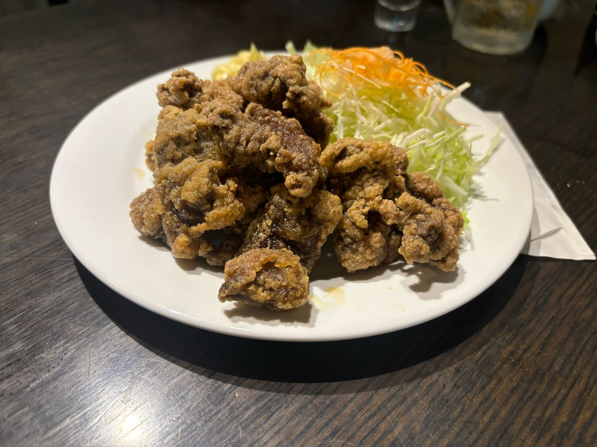
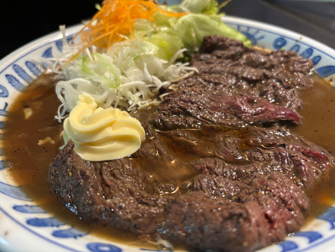
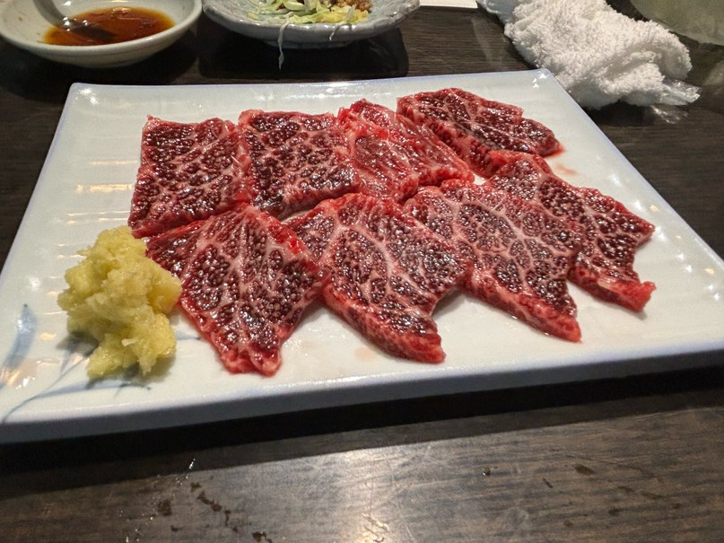
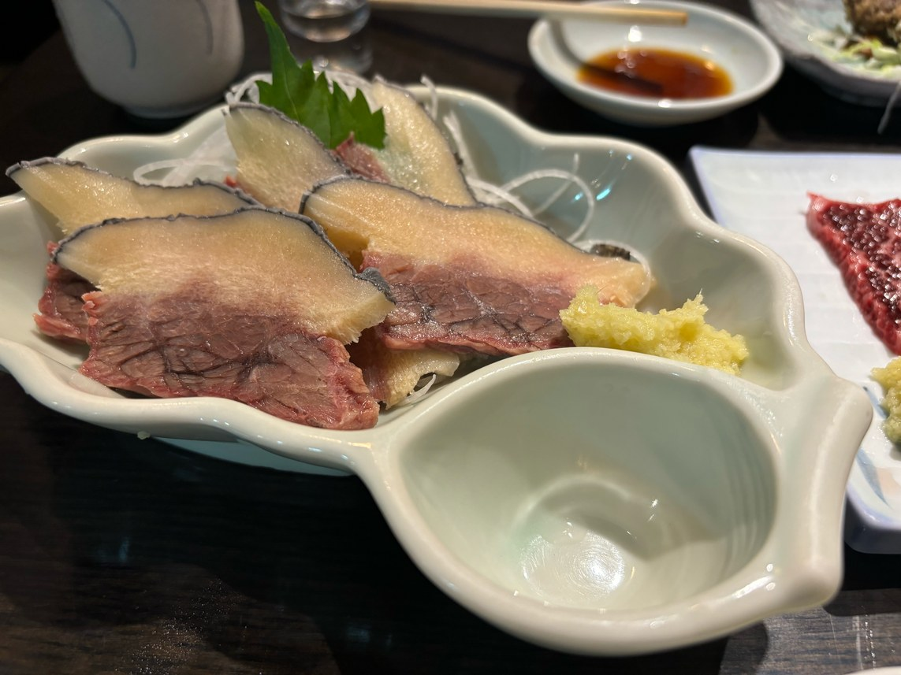

01
くじらのお宿 一乃谷




- 住所
- 東京都千代田区内神田2丁目7-6ゆまにビルB1F
- アクセス
- J R中央線・地下鉄銀座線 神田駅
「一乃谷」さんは、東京にありながら宮城県の豊かな海の恵みを感じられるお店です。
特に、現在希少になってしまったくじら料理が自慢で、古くからの日本の食文化を大切にしつつ、新しい世代にもその魅力を伝えています。
店主の谷さんは、今年6月に上映開始となった、日本の鯨食文化の魅力を伝えながら世界の食糧資源や生態系を考えるドキュメンタリー映画『鯨のレストラン』（八木景子監督）に出演されています。
宮城の味を思い出させる逸品と、宮城の地酒で、宮城の風土を感じられるひとときを提供されています。
取材日：2024年9月3日